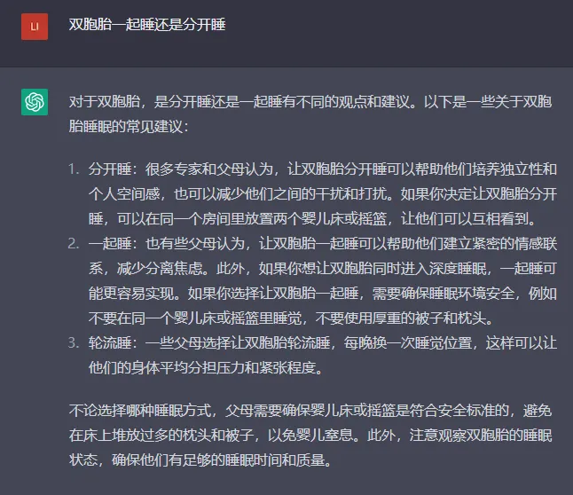
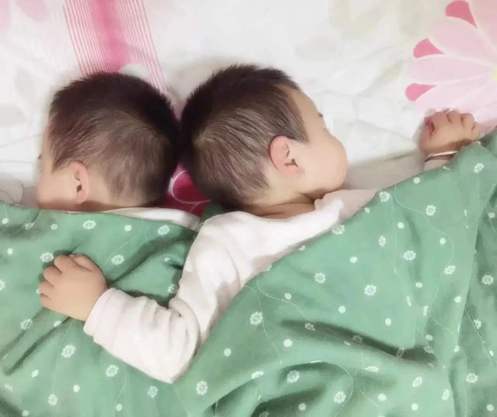
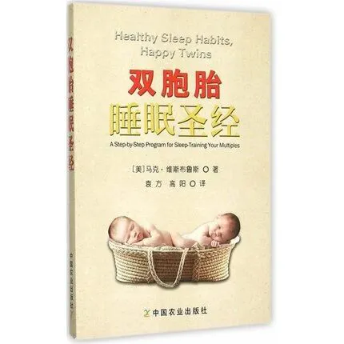
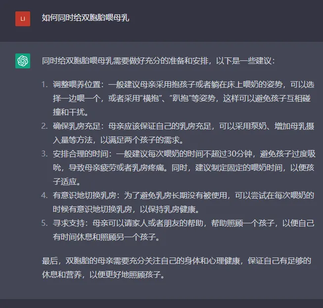
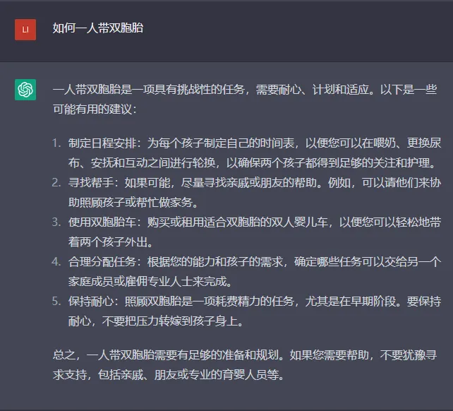
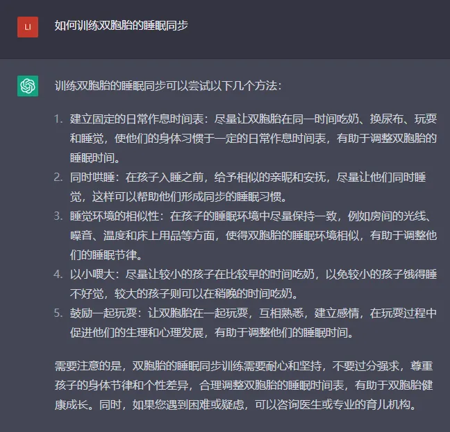
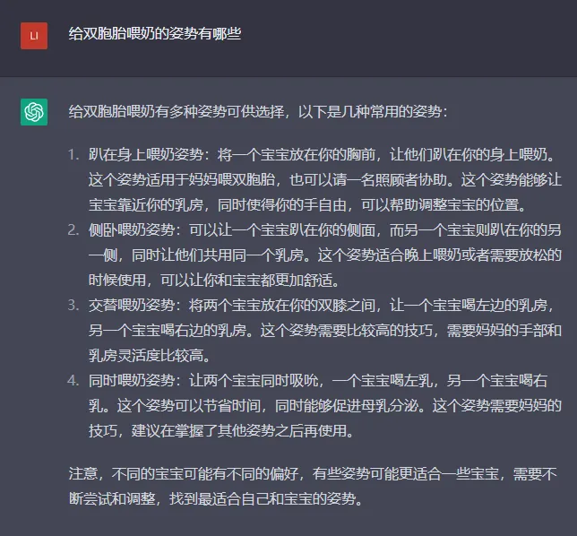
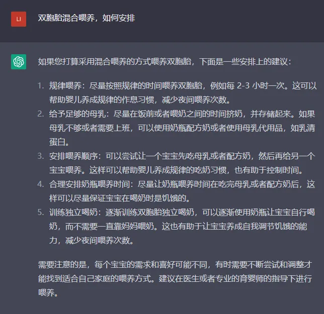

孖仔帮
公众号ID：twinsbang
关注
文|圆圈妈妈
网图|侵删
继续上一篇chatGPT的双胞胎育儿经【孕育篇】，这期是养育篇。

双胞胎一起睡还是分开睡
圆圈妈妈来battle：
其实两种睡法都可以，至于适合哪种方式，主要看孩子的年龄和身体发育状况。
在圆圈兄弟的新生儿期，我把他们哥俩放一张小床一起睡，基于2点考虑：
1，安全问题。
据英国国家医疗服务体系NHS认为，对于小月龄的双胞胎睡在同一床面上是安全的，月龄增大后可考虑分床睡。
2，方便照顾，新生儿的睡眠时间较长，互相干扰的问题在此时还不算太突出，通常是把两人同时喂饱了，就放一起睡。

很喜欢看见圆圈兄弟叠罗汉似的睡成一团的样子，明明两人一个床头一个床位，早晨醒来就莫名其妙地睡到一块，两只小肉球软糯糯地相互依靠着，超级治愈。
到了圆圈兄弟的婴儿期，他们俩开始有了规律的睡眠时间和周期，但晚上还是会偶尔醒来一两次，醒来的那个崽还会不客气地朝另一个深睡中的崽狠狠踹两脚，接着哭喊声此起彼伏...
于是我们决定让他们俩分开睡，奈何家里太小容不下两张婴儿床，只好跟我们一起睡，我带圆圆睡床头，圆圈爸带着圈圈睡床尾，每隔一个星期交换一次。
我和圆圈爸约法三章，确立好归属权，管好各自带睡的那个娃，只要娃一哭醒就得迅速响应，立马把娃抱到客厅去安抚。
睡眠互相干扰的情况大大减少。
如何训练双胞胎的睡眠同步
圆圈妈妈来battle：
关于睡训，有些人认为没必要，因为很残忍；有些人却认为早日给孩子制定有规律的作息时间，不仅有利于孩子的成长，也能让照料者轻松不少。
anyway，各有各的观点，这里不battle。
如果双胞胎到了1周岁，睡眠作息一直很混乱，妥妥睡渣两枚，我认为还是有必要做出相应调整，推荐大家看看《双胞胎睡眠圣经》。

如果不喜欢看书，也可以看看电子版，公众号回复睡眠，获取电子档；如果没时间看长篇大论，也可以看看咱们往期推文有精简版的，针对不同年龄段的双胞胎，提供了不同的睡眠训练建议。
双胞胎家庭的救命稻草：《双胞胎睡眠圣经》
《双胞胎睡眠圣经》解读01：双胞胎宝宝的睡训，何时开始为宜？
《双胞胎睡眠圣经》解读02：初月龄的双胞胎睡眠特点（上）
《双胞胎睡眠圣经》解读03：初月龄的双胞胎睡眠特点（下）
《双胞胎睡眠圣经》解读04：2月龄的双胞胎睡眠特点
《双胞胎睡眠圣经》解读05：3月龄的双胞胎睡眠特点
《双胞胎睡眠圣经》解读06：4月龄的双胞胎睡眠特点
《双胞胎睡眠圣经》解读07：5月龄的双胞胎睡眠特点
《双胞胎睡眠圣经》解读08：6–9月龄的双胞胎睡眠特点
《双胞胎睡眠圣经》解读09：9–12月龄的双胞胎睡眠特点
《双胞胎睡眠圣经》解读10：1–2岁双胞胎睡眠特点
《双胞胎睡眠圣经》解读11：2–3岁双胞胎睡眠特点
《双胞胎睡眠圣经》解读12：3--4岁双胞胎睡眠特点
给双胞胎喂奶的姿势有哪些
圆圈妈妈来battle：
我想，我今生最遗憾的就是没有喂过奶。
每次听到圆圈兄弟跟小伙伴尬聊时说，我们都是喝牛奶长大的。
我总是淡淡的忧伤。
能坚持给双胞胎喂母乳的妈妈，不管是瓶喂，亲喂，同时喂，轮流喂，都是实打实的女汉子，真威武。
我ORZ了！
请接受我的膝盖，并允许它长达10086＋分钟！
双胞胎母乳喂养，奶水不够，如何混合喂养
圆圈妈妈来battle：
双胞胎混合喂养最大的问题是如何安排喂养顺序，综合双胞胎喂养群妈妈们的经验，建议是一碗水端平，即两个宝宝均混合喂养，方式大致两种：
1，比如这一顿是宝宝A吃母乳，宝宝B喝配方奶，下一顿就轮到宝宝B吃母乳，宝宝A喝配方奶，最好做个计划表或使用APP软件记录下，以免搞混了。
2，可以把母乳挤出来按次喂养，一般一次挤250ml左右，打个时间差，两个宝宝都吃母乳，实在吃不饱再酌情加配方奶。
另经常有妈妈问：有奶水但不多，只够一人吃，可以一个宝宝吃母乳，另一个吃奶粉吗？
不建议，因为如果母乳只给一个宝宝吃，妈妈一定会偏心母乳喂养的那个宝宝，对瓶喂奶粉的宝宝没那么亲密。
我就是对经常被我抱着喝奶的那个娃比较亲密，就是情感上会有些许倾斜，我自己也说不出这种感觉是什么意思，但确是真的。

如何同时给双胞胎喂母乳
圆圈妈妈来battle：
我看到咱们双胞胎喂养群的妈妈们大都倾向于同时喂，因为这种方法可以节约时间，让自己有更充足的睡眠时间。
但难度系数实在太大了，这非常考验妈妈的耐力和体力，稍不注意可能导致两个娃都呛奶或吸乳困难。
毕竟给一个宝宝喂奶30分钟已经累得够呛了，更何况是同时喂两个。
当然，也不是没有办法的。
掌握喂奶姿势和辅助一些喂奶神器，同时又有家人的配合和全力帮助，也是可行的。我们喂养群的妈妈经过一番深度交流和切磋，再结合自己的一番摸滚带爬和无数次的尝试和实战演练，大都能探索出自己的一套给双胞胎同时喂奶的模式。
有兴趣的妈妈可以入群观摩借鉴。
温馨提示：双胞胎喂养群仅限宝妈，谢绝宝爸！

如何一人带双胞胎
圆圈妈妈来battle：
一人带双胞胎，我怎么看都觉得很惊悚，光是把两个娃生下来就已经费了我半条老命了，还得单枪匹马地伺候两个幼崽的吃喝拉撒睡。
臣妾做不到呐。
圆圈兄弟两岁前，家中常备四位老人轮流带娃，晚上还有我和圆圈爸接力，依然累得人仰马翻。
每天都是，人在前面走，魂在后面追。
因此，当我亲眼目睹群里的妈妈们那些一挑二养育双胞胎的战斗史时，我才发现我有多么地孤陋寡闻。
一人带双胞胎甚至三胞胎的妈妈们..在咱们群比比皆是，个个身怀绝技，一介女流凭一己之力活出一队千军万马，浩浩荡荡地奔波在两个人类幼崽的屎尿屁之间。
未完待续...
【相关阅读】
chatGPT 的双胞胎育儿经【孕育篇】
-END-
微信公众号：孖仔帮
ID : twinsbang
专注双胞胎孕育，养育，教育经验分享
扫码关注我们
点一下你会更好看耶



